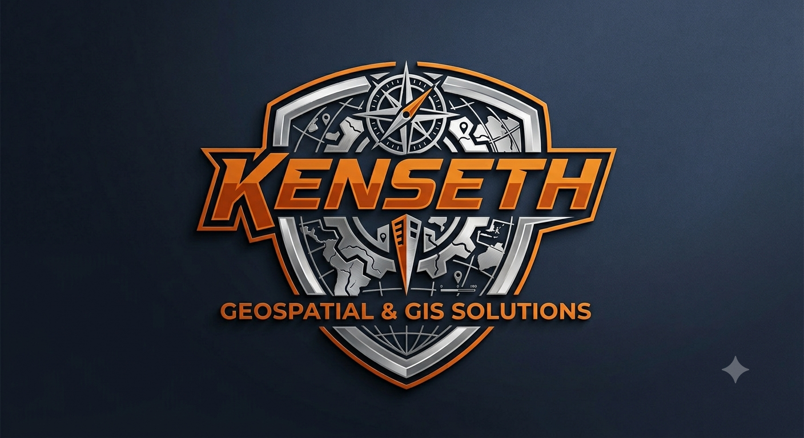

Providing precision geographic data engineering, advanced cartographic compilation, and environmental analysis workflows for sustainable planning and development.
Advanced vector spatial processing, coordinate transformations, custom layout classification, and digital mapping solutions tailored to infrastructure assessment.
Multi-temporal Land Use and Land Cover (LULC) change detection analysis, multi-spectral satellite imagery classification, and demographic distribution modeling.
Sustainable solid waste management analytics, hydrology mapping, watershed delineations, and baseline regional development assessments across urban informal settlements.
To support academic research and institutional mapping initiatives, verified spatial asset layers are available for direct digital download below.
Dataset Name: Samburu County Educational Institutions Infrastructure Layer (Categorized Vector Set)
📥 Download Shapefiles Archive (.ZIP)Interactive verification model displaying regional spatial distribution frameworks, educational infrastructure access points, and attribute level classifications across Samburu County.
Cartographic spatial framework delineating the administrative boundaries and localized inset spatial orientation of Dandora Ward, Nairobi. Designed to support urban environmental planning, infrastructure mapping, and sustainable solid waste management analysis.
Reach out today to discuss your project requirements and receive a budget-friendly quote for custom GIS mapping services.
📩 kenseth5203@gmail.com or call +254794545456